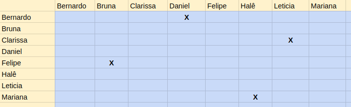

Sprint 1
Número da sprint: 0
Data de Início: 20/04/2017
Data de Término: 04/05/2017
Duração: Quatorze Dias (Duas Semanas)
Scrum Master: Mariana Pícolo
1. Pareamento

1. Planejamento das Histórias
Para esta sprint, foram continuadas histórias que não foram fechadas na sprint anterior, além de serem designadas novas histórias. Nesta sprint não foram realizadas histórias técnicas.
2. Histórias
US07 Ver perfil
Descrição: Eu, como membro do projeto, desejo ver o perfil de outros usuários do sistema para que eu possa ter acesso aos seus dados.
Critérios de Aceitação:
Exibir o perfil de um aluno;
Exibir o perfil de um administrador.
Responsáveis: Clarissa Lima e Mariana Pícolo.
US10 Listar Alunos
Descrição: Eu, como membro do projeto, desejo listar os membros para ter acesso a todos os membros cadastrados no sistema.
Critérios de Aceitação:
Deve ser possível buscar os membros listados pelo nome.
Responsáveis: Bernardo Henrique e Daniel Teles.
US19 Ver notícia detalhadamente
Descrição: Eu, como usuário, desejo ter uma visão detalhada de uma notícia escolhida na lista de notícias para que eu possa ler a notícia por completo.
Critérios de Aceitação:
Apenas os grupos de usuários apropriados terão permissão para acessar notícias (admin, diretores, RH).
Responsáveis: Halê Valente e Mariana Pícolo.
US20 Publicar Notícias
Descrição: Eu, como diretor do projeto, desejo publicar notícias para que os outros usuários possam ver os informes que lhes competem.
Critérios de Aceitação:
Apenas os grupos de usuários apropriados terão permissão para criar notícias (admin, diretores, RH).
O usuário pode indicar quais grupos terão acesso a uma determinada notícia (pública, apenas usuários cadastrados, funções específicas).
Responsáveis: Bruna Pinos e Felipe Hargreaves.
US38 Enviar convite de cadastro
Descrição: Eu, como administrador, desejo enviar um convite de acesso ao sistema para que um usuário possa se cadastrar.
Responsáveis: Clarissa Lima e Leticia Souza.
4. Fechamento da Sprint
| Histórias Planejadas | Status |
|---|---|
| US07: Ver perfil | Incompleto |
| US10: Listar Alunos | Completo |
| US19: Ver notícia detalhadamente | Incompleto |
| US20: Publicar Notícias | Completo |
| US38: Enviar convite de cadastro | Incompleto |
4. Análise do Scrum Master
Nesta sprint, não foram realizadas histórias técnicas e duas, das cinco, histórias de usuário planejadas foram implementadas. Estas histórias não foram entregues pelos seguintes fatos:
- Durante o período da Sprint 1 os membros se encontraram atarefados com outras disciplinas.
- Alguns membros ainda possuem dificuldade na tecnologia usada.
- Dificuldade de encontrar horários com a dupla de pareamento.
Nesta sprint, foi constatada uma queda na produtividade dos membros em comparação com a sprint anterior. Os pareamentos continuaram os mesmos, com o objetivo de sanar as dívidas técnicas das sprints anteriores.
Um dos problemas constatados durante a sprint, foi a falta de disponibilidade dos membros do grupo para pareamentos, por conta da proximidade da data da prova 1.
Os membros optaram por priorizar os estudos para a prova, que também traria benefícios ao projeto, já que o conhecimento dos padrões estaria solidificado, uma vez que foram estudados extensivamente para a prova.
A não entrega das tarefas pode dificultar o desenvolvimento das tarefas a seguir, uma vez que as histórias priorizadas para essa sprint são base para o restante do software. As histórias que não foram concluídas serão replanejadas para as próximas sprints.